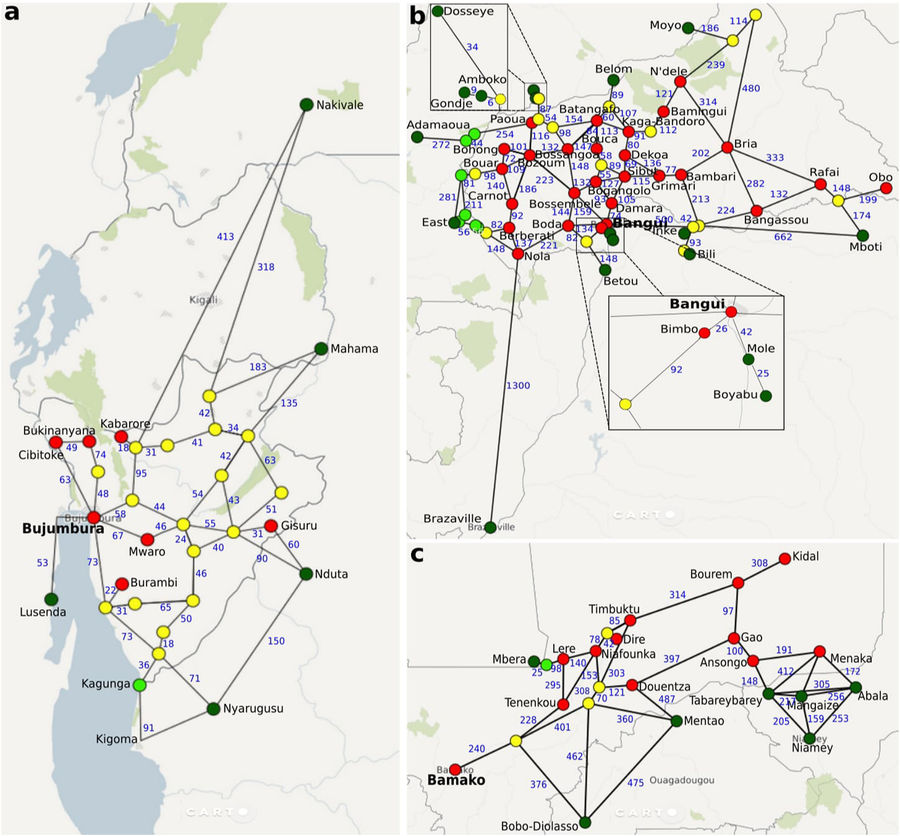
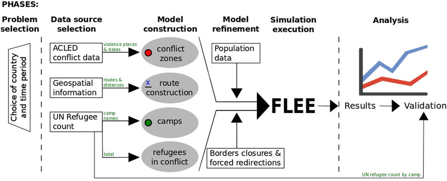

Una simulación para decidir el destino de las personas refugiadas y mejorar la ayuda
Más de 65 millones de personas han abandonado sus hogares en todo el mundo. Cada minuto de 2016, 20 personas se han tenido que desprender de su casa, sus posesiones y de su rutina diaria y han tenido que abandonarlo todo para sobrevivir en otro lugar. En lo que se refiere estrictamente a refugiados ACNUR cifra en 22,5 millones de personas.
Investigadores de la Universidad Brunel de Londres han realizado una simulación para predecir los destinos de los movimientos de refugiados en regiones en conflicto; dónde, cuándo y cuántos refugiados es probable que lleguen, y qué campamentos pueden llenarse.
A través de la simulación se puede predecir correctamente más del 75% de sus destinos, y puede convertirse en una herramienta vital para que los gobiernos y las ONG ayuden a asignar mejor los recursos humanitarios.
Para llevar a cabo esta investigación, el equipo ha construido sus simulaciones a través de la crisis de Burundi en 2015, la crisis de República Centroafricana en 2013, y la guerra civil de Malí en 2012.
Los investigadores han realizado las simulaciones con datos abiertos, incluidos los datos de registro de refugiados del Alto Comisionado de las Naciones Unidas para los Refugiados (ACNUR), datos sobre conflictos del Armed Conflict Location & Event Data Project e información geográfica de Microsoft Bing Maps.
Este enfoque de proceso de datos ayuda a las organizaciones a desarrollar rápidamente simulaciones cuando ocurre un conflicto, y les permite investigar el efecto del cierre de fronteras entre países y la redirección forzada de refugiados a través de los campamentos. También les ayuda a definir procedimientos para recopilar datos y validar los resultados de la simulación, aspectos que generalmente no se cubren al presentar un modelo de simulación aislado.
Más información: New simulation technology to predict refugee destinations could improve aid efforts
Artículo científico: A generalized simulation development approach for predicting refugee destinations